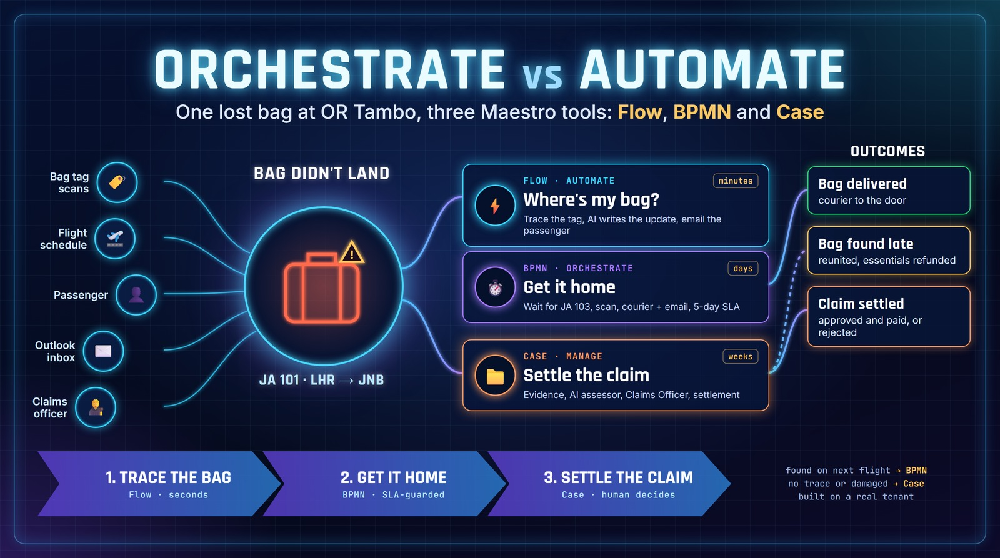
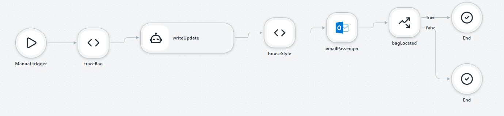
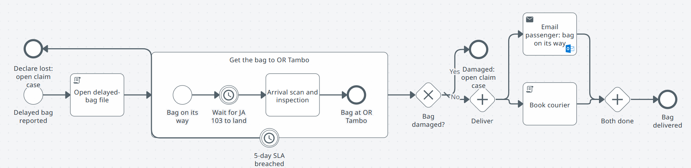
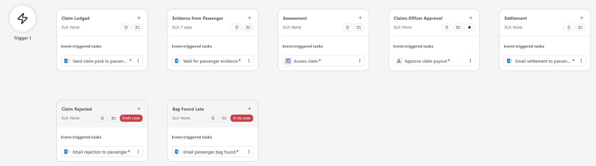

Orchestrate vs Automate: one lost bag, three Maestro tools
Your bag didn't land. Over the next three weeks one airline has to trace it, get it home and, if that fails, pay you for it. I built that whole story on my own tenant in all three UiPath Maestro tools: a Flow, a BPMN process and a Case. Doing the same story three ways turned out to be the clearest way I have found to answer the question clients keep asking me: when do you automate, and when do you orchestrate?

Your bag didn't land
You have been on the carousel at OR Tambo for forty minutes. Everyone from your flight has gone home. The belt stops. Somewhere between London and Johannesburg your bag took a different route, and you are about to find out how good your airline's processes really are.
From the airline's side, that one missing bag is three very different kinds of work:
-
Minutes
Where is it?
Look up the bag tag, see where it was last scanned, and tell the passenger something useful before they reach the parking lot.
-
Days
Get it home
A fixed procedure: wait for the flight it is on, scan it, check it, courier it, and give up after five days if it never shows.
-
Weeks
Settle the claim
Receipts, a contents list, a liability limit, a person who signs off the money, and a bag that might still turn up halfway through.
UiPath Maestro gives you three tools for exactly this. When you open a Maestro project in Studio Web now, the welcome screen says it plainly: "Build using Case, Flow, or BPMN." The marketing answer to "which one?" is "it depends". This post is my attempt at a better answer, built rather than drawn.
The use case: Jacaranda Air
Meet Jacaranda Air, a made-up South African airline named after the purple trees that take over Joburg every November. Our passenger, Thandi Mokoena, flew in from London on JA 101. Her bag was late off a connecting flight from Manchester, missed the transfer at Heathrow and was put on the next evening's JA 103. A second passenger on the same flight is less lucky: their bag was checked in and never scanned again.
Two bags, two endings, and three Maestro projects in one solution, each passing the bag to the next:
Flow: Where's my bag?
Trace the tag, have an agent write a warm update, email the passenger, then hand off: a bag on the next flight goes to the delivery process, a bag with no trace becomes a claim. Runs in seconds.
BPMN: Delayed bag delivery
Open a delayed-bag file, wait for the flight, scan and inspect the bag on arrival, then book a courier and email the passenger at the same time. A five-day SLA timer watches the whole thing and declares the bag lost if it never arrives.
Case: Lost bag claim
Ask for evidence, wait for the passenger, let an AI agent assess the claim against the Montreal Convention limit, have a Claims Officer approve or reject, and settle. A bag that turns up mid-claim can interrupt everything.
Automate: the Flow
The first hour is classic automation. Something happens, a few systems get touched, a person gets told, done. Nobody waits on anybody. That is what Maestro Flow is for.

I built it the way I now build every Flow: in TypeScript with the Maestro builder SDK, compiled down to the .flow file that Studio Web opens. My coding agent drove it with the uipath-maestro-flow skill.
-
One solution for all three
~2 minAll three projects live in one solution, so they deploy together and can share connections. The Flow is scaffolded with its TypeScript source, so you never hand-write the flow id.
Terminaluip solution init "JacarandaBags"cd JacarandaBags && uip maestro flow init WheresMyBag --sdk-sourceflow-decompile: wrote WheresMyBag.flow.ts · "Status": "Registered"uip maestro registry search 'outlook send email' --limit 5"NodeType": "uipath.connector.uipath-microsoft-outlook365.send-email" -
Trace, write, send, decide
~20 minA script looks up the scan trail. An inline agent (Claude Sonnet, through my tenant's model list) writes the passenger email from the trail and is told never to invent facts. The Outlook connector sends it. A branch decides the hand-off: located goes to the delivery process, no trace goes to a claim.
Terminaluip maestro flow check .flow-sdk/WheresMyBag.flow.ts --source✗ [INLINE_AGENT_COMPOSITE_INPUT] input `events` is bound to a computed expression ... its value does not reach the agentThe checker earned its keepI had passed the scan trail to the agent as
JSON.stringify(...)of a step's output. That compiles, validates and runs, and the agent silently receives nothing, because the platform only passes plain references through to an agent. The source check caught it before a single run. The fix: build the text in the script and pass that. -
Run it for real
secondsA debug run is a real run: it uploads the solution to your personal workspace in Studio Web and executes every node, email included. (Point it at a shared folder and it fails; debug runs belong in your personal workspace.)
Terminaluip maestro flow debug WheresMyBag --inputs @in-located.json"status": "Completed", "st": "located", "eta": "2026-11-12 07:55 at OR Tambo""next": "Start the delayed-bag delivery process (BPMN)""subj": "Update on Your Bag Tag JA482193 \u2013 Jacaranda Air"Look at that subject line. My house style (and this blog's) is no long dashes, and I had written exactly that into the agent's prompt. It used one anyway. So I tightened the prompt and ran it again. It used one again.
-
A rule is code, not a request
~5 minThe fix was not a better prompt. It was one deterministic step after the agent that enforces the rule every time:
.flow-sdk/WheresMyBag.flow.ts// House style is a rule, not a request: enforce it in code, not in the prompt. .step("houseStyle", script({ code: ` const fix = (x) => String(x || '').replace(/ *[\u2013\u2014] */g, ' - '); return { subject: fix($vars.writeUpdate.output.subject), html: fix($vars.writeUpdate.output.html) };`, }))Terminaluip maestro flow debug WheresMyBag --inputs @in-located.json"status": "Completed", "failed": [], "subj": "Update on your bag - Tag JA482193"
Orchestrate: the BPMN process
Thandi's bag is on JA 103. Now the airline has to get it from the aircraft to her front door, and this part is not "do it fast". It is "do it the same way every time, wait when you have to, and never let it fall through the cracks". That is a process with a known shape, and BPMN is the language for known shapes.

Four things in that picture are hard to do cleanly in a straight-line automation, and they are the reason to reach for BPMN:
-
Waiting
A timer is a step
"Wait for JA 103 to land" is a real node. The process sleeps, costs nothing, and wakes up on time. In my demo it waits one minute; in production it would wait until the ETA.
-
Deadlines
An SLA you can see
The clock on the subprocess border is a five-day boundary timer. If the bag never makes it, it interrupts whatever is happening inside and declares the bag lost.
-
Decisions
Routes, not if-statements
"Bag damaged?" is a gateway with labelled paths. An auditor can read it. A damaged bag leaves the delivery process and becomes a claim.
-
Parallel
Two things at once
Booking the courier and emailing the passenger happen in parallel, and "Both done" waits for both. Nobody has to remember to do the second one.
The uipath-maestro-bpmn skill splits the work in a way I liked. The registry hands you the exact XML for each UiPath node (the Outlook send, the script tasks), already filled in for your tenant. The BPMN structure (subprocess, boundary event, gateways) is written by hand from the spec. Then the CLI lays out the diagram and validates it.
<bpmn:boundaryEvent id="Boundary_SLA" name="5-day SLA breached"
attachedToRef="Sub_GetBagHome" cancelActivity="true">
<bpmn:outgoing>Flow_SLA</bpmn:outgoing>
<bpmn:timerEventDefinition>
<bpmn:timeDuration xsi:type="bpmn:tFormalExpression">P5D</bpmn:timeDuration>
</bpmn:timerEventDefinition>
</bpmn:boundaryEvent>My favourite line in that output is the last one. Terminated is the good news: the bag arrived inside five days, so the engine cancelled the SLA timer for me. That is orchestration doing its quiet job, keeping a promise and then tidying up after itself.
Manage: the Case
The second bag never turned up, and the bag that arrived damaged needs a claim too. Now everything about the shape changes. The passenger has to send receipts, and might take a day or a week. Someone has to judge what is reasonable. A Claims Officer has to approve real money. The claim can be rejected. And the bag can turn up halfway through and make half of it irrelevant.
You can draw that in BPMN, but you will end up with arrows from every box to every other box. Case Management models it the way the business talks about it: stages a claim moves through, tasks inside them, rules that move it on, and exception lanes that can interrupt it.

I built this one design-first, the same way as the Case Management post. My agent, using the uipath-planner and uipath-maestro-case skills, proposed the whole case as one review: stages, tasks, the other paths it considered, SLAs, rules, resources and every decision it made for me. I answered two questions and said "build it". It then wrote a design document, checked it against a 35-point template, and turned it into the case plan.
Three design choices are worth calling out, because they are the case-shaped ones:
-
"Evidence from Passenger" is a real Outlook "email received" wait, filtered on the bag tag in the subject. The case sits there for as long as it takes, with a seven-day SLA that warns the Claims Officers at 70% and tells Customer Relations if it is breached. Waiting is a first-class state, not a polling loop.
-
"Bag Found Late" is entered by one email event (the Baggage Desk sends FOUND plus the tag) no matter which stage the claim is in. It interrupts the case, tells the passenger, refunds essentials only and closes the claim. Modelling that once, as a lane, instead of on every stage is exactly what Case Management is good at.
-
The Claims Officer's button is the routing fact. Reject leaves the approval stage through a guarded exit into the Claim Rejected lane; Approve completes it with the exact opposite guard and Settlement follows. The agent recommends, a person decides, the rules do the routing.
The AI assessor: the model reads, the code decides
The Assessment stage needed an agent my tenant did not have, so the build created one: JacarandaClaimAssessor, a small coded agent. Its design is the dash lesson again, deliberately. A language model reads the passenger's messy email and turns it into line items (what it is, whether it is content, an essential or a repair, the amount, and whether there is a receipt). Then plain Python applies the policy and the liability cap. The model never does the maths on the money.
MONTREAL_LIMIT_SDR = 1519 # liability limit for checked baggage
for line in extraction.lines:
if line.category in EXCLUDED_CATEGORIES:
rejected.append(f"{line.description} (cash is not covered)")
elif line.kind == "essential" and not line.hasReceipt:
rejected.append(f"{line.description} (essential with no receipt)")
elif line.kind == "repair" and reason != "damaged":
rejected.append(f"{line.description} (bag repair only applies to damaged bags)")
else:
accepted.append(line)
limit = round(MONTREAL_LIMIT_SDR * state.sdrToZarRate, 2)
recommended = min(claimed_total, limit)In its one local test, a fictional passenger claimed R31,800 of contents and R1,800 of receipted essentials, plus R500 cash and a phone charger with no receipt. The agent recommended R33,600: it dropped the cash and the charger, and stayed under the Montreal Convention cap of 1,519 SDR (about R36,456 at the demo's R24 per SDR). It also flagged the claim for review because it had excluded lines, which is exactly what you want a Claims Officer to see.
What broke along the way
No build like this goes cleanly, and the failures were more useful than the successes. Here is the list, in the order it happened:
-
Covered above. Prompts are requests. Rules belong in code. A two-line script step fixed it for good.
-
The first version of that script used
\sin a regular expression inside a TypeScript template string, where the backslash quietly disappears. The subject came out with double spaces. A small reminder that the deterministic step needs its own test run too. -
My first Outlook connection worked perfectly in every debug run, but it was not in the tenant's Resource Catalog, so the Case designer lit up with six errors after upload. Switching all three projects to a catalogued connection (which signs into the same mailbox) cleared it. Lesson: a run passing does not mean the designer, and the next person to open it, can resolve your resources.
-
The design document had an input row with no real field name, a leftover from me not knowing the connector's filter field yet. Ordinary validation passed. Strict validation against the design caught it and refused to call the build complete. The builder did the right thing and did not guess.
-
The Python packaging tool behind coded agents rejects spaces in a project name, so the agent became JacarandaClaimAssessor and the design document was updated to match, with my permission. Small, but it is the kind of thing that breaks a rebuild six months later if nobody writes it down.
-
Flow debug runs belong in your personal workspace; pointing one at a shared folder was refused. And a case debug run does not start an agent sitting in the same solution. Neither is a bug as such, but both are worth knowing before you plan a demo.
How I would choose now
After building the same story three ways, this is the checklist I will use with clients. It is opinion, not product documentation, but it is opinion with three working projects behind it.
-
Automate
Pick Flow when...
it finishes in minutes, nobody waits on anybody, and the steps are system calls, scripts and maybe an agent. Think "react to an event and get it done": trace a bag, enrich a record, notify a person.
-
Orchestrate
Pick BPMN when...
the path is known and must be followed the same way every time, with timers, deadlines, parallel work and decisions an auditor will want to read. Think "a procedure": deliver a bag, onboard a supplier, close a month.
-
Manage
Pick Case when...
it lives for days or weeks, waits on people outside your walls, needs judgment and sign-off, and can be interrupted by events at any point. Think "a file with a person's name on it": a claim, a complaint, an investigation.
And the real answer, the one the Jacaranda Air story makes obvious: you rarely pick one. The Flow hands a found bag to the BPMN process and a missing one to the Case. The BPMN process hands a damaged or overdue bag to the Case. Each tool does the part it is good at, and the hand-offs are where the design work is. Automate the minutes, orchestrate the days, manage the weeks.
Test yourself
Q1A bank wants to email a customer the moment a card transaction is flagged, with a short AI-written explanation. Which tool?
Minutes, no waiting, system calls plus an agent: that is automation. If the customer then disputes the transaction, that dispute is a case.
Q2In the BPMN debug run, the "5-day SLA breached" timer showed Terminated. What does that mean?
A boundary timer only fires if its subprocess is still running when time runs out. The bag arrived inside five days, so the timer was cancelled. That is the good outcome.
Q3The agent kept putting a long dash in the email subject even though the prompt said not to. What fixed it?
The stricter prompt was tried and failed. A two-line script that rewrites the text enforces the rule on every run. Let models do the fuzzy work and put hard rules in code.
Pick an answer for each one.
What's next
This post sits in the Run & Scale pillar with the Case Management build and the Dark Testing Factory. Next for Jacaranda Air: a real Action App for the Claims Officer, a full deploy so the assessor agent runs inside the case, and wiring the hand-offs so the Flow actually starts the BPMN process and the BPMN process actually opens the case. When that runs end to end, you will read about it here.
And on the show: Episode 4 is recorded live at UiPath Fusion Cape Town on Thursday 19 November, 13:00 to 14:30. If you are there, come and say hi, and bring your own "which Maestro tool?" argument. Details are on the main site.
If you want to try this yourself: install the UiPath skills, load uipath-maestro-flow, uipath-maestro-bpmn and uipath-maestro-case in your coding agent, pick a process you know well, and ask it to build the same story three ways. You will learn more about your process than about the tools.